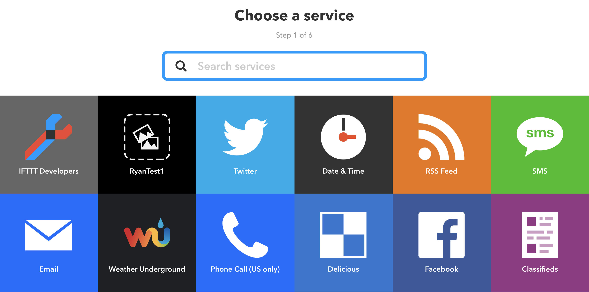
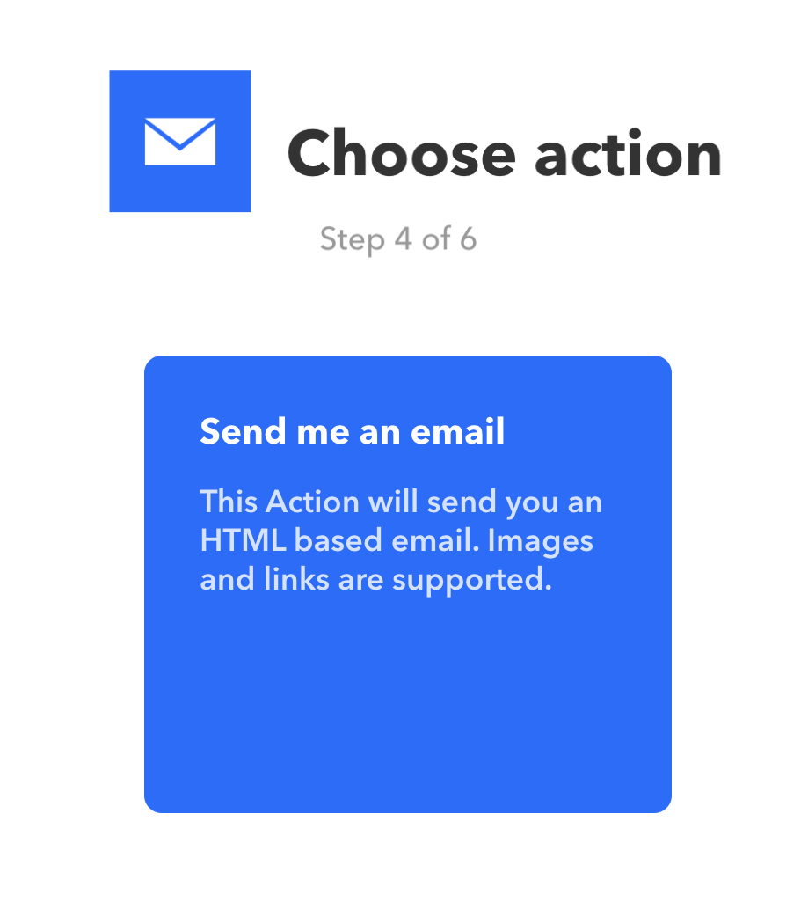
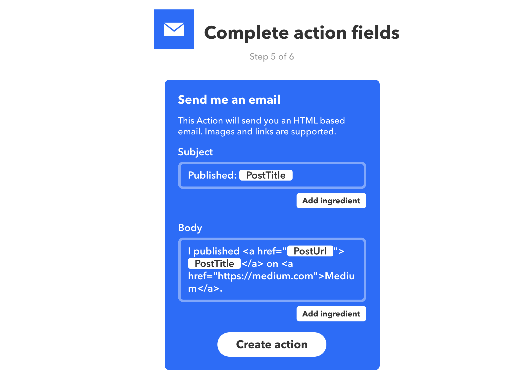
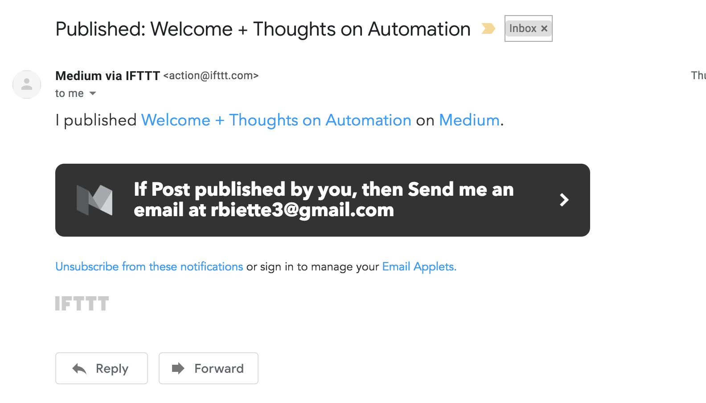

The goal of this project was to automate part of my portfolio website. This posed somewhat of a broad task. I could take a deep dive into coding and insert javascript, provide a weather update or other information to the user through some online resources, or a number of different avenues. I chose to use IFTTT (IF This Then That - an online tool that allows users to create IoT-enabled and automated systems) as it is an accessible online tool and through this project, I could help provide a resource to help others set up their own IFTTT applets.
The first step I took was to select the purpose of the automation on my website. I thought my blog on Medium provided a number of opportunities to automate. As a result, I chose the Medium icon in the first step of the IFTTT building process as my service.
Next, I chose my trigger action (see below). This is the event that initiates the automated process. I wanted to do something every time I published a new blog post, so I chose the trigger of "Post Published By You".

Next, I needed to choose what would happen every time I initiate the automation (the "action"). I knew that I wanted to receive an email confirmation. Therefore, through IFTTT, I built my applet so that every time I published an article, I would receive a email making sure it sucessfully published.
 In addition to creating this small automated process, I also wrote a blog post to see if my system worked. The blog can be found at medium.com/@rbiette3. Here, I write a little bit about automation in a casual, yet informative way. When the moment of truth came, I found that my system was sucessful as shown below.
In the future, I hope to build more complex automative systems. While this was an interesting activity, it was quite simple. My goal of this project at its core was to provide a resource or example for people who may be just starting to learn about automation and would like to try to implement it for themselves. Past this example, I see many potential improvements that I could implement in my life, such as turning my lights off automatically when I leave the house or only watering my garden if there is no rain predicted in the forecast. IFTTT is a helpful tool that allows different APIs and devices to communicate with one another. However, I am curious about the possibilities that exist if I were to create my own automated systems from scratch. If you have an idea, please feel free to reach out.